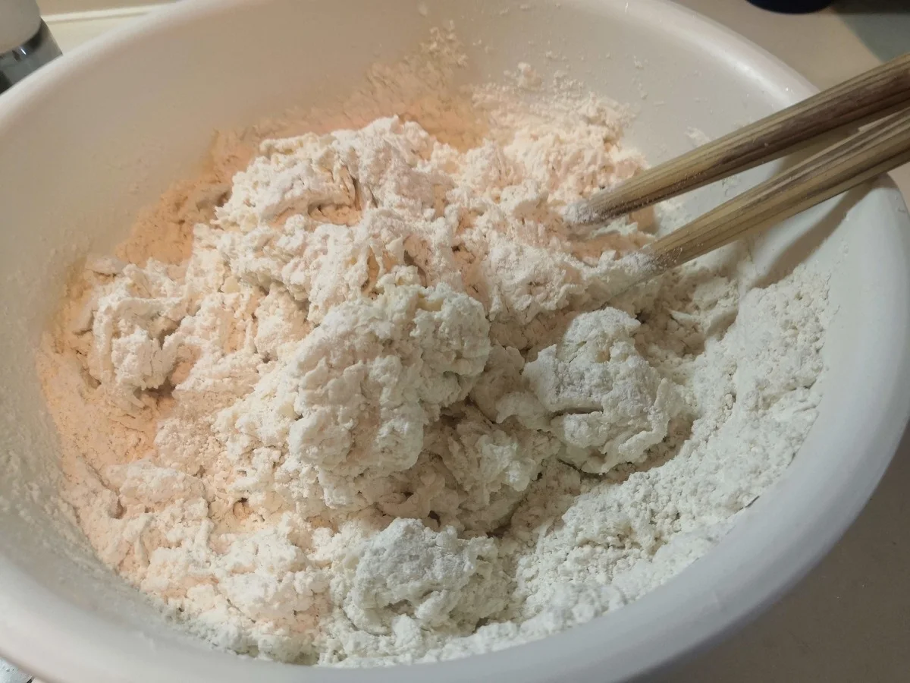

お好み焼き・うどん
卵とおからパウダーの基本のお好み焼き
おからパウダー30gと卵2個で作る、小麦粉を生地に入れないお好み焼きです。キャベツや長ネギ、豚肉などを合わせ、私はソースとマヨネーズにからし
中力粉1kgにおからパウダー80gを加え、生地に塩を入れずに打つ手打ちうどんです。おからだけで作る麺ではなく、主な材料は小麦粉です。


水1000mlは元の配合の目安です。必ず全量を入れるという意味ではありません。粉に少しずつ水を合わせ、まとまりを見て加減してください。
別の配合で作る時に、水の量だけをこのレシピに合わせないでください。おからパウダーを増やした時も、同じ水加減で作らないようにしましょう。
袋は重ねて使い、途中でも破れていないか確かめます。私は元記事でも、袋が破れたことに触れています。
袋が破れて、生地に床の汚れなどが付いた場合は、そのまま調理に使わないでください。
無塩とは、生地に塩を入れていないという意味です。つゆや具まで含めて塩分がない料理ではないので、汁の味つけは使うだしや調味料に合わせて考えましょう。私はこの麺を、煮汁に直接入れて調理する使い方も紹介してきました。
できあがるのは生麺です。そのまま食べず、必ず加熱してください。火の通り方は麺の幅や厚さで変わるので、中心に生の部分が残っていないか確認します。ほかの配合のほうとうの加熱時間は、そのまま当てはめないでください。
作ってすぐ使うほか、生麺を冷凍しておき、凍ったまま加熱する使い方もできます。
加熱時間は作った時の目安です。容器や調理器具によって仕上がりは変わります。中心まで火が通っていることを確認してください。
おからパウダー入り無塩手打ちうどんの材料・作り方（50kgdiet.com） →
このページは書籍の改訂原稿をもとに掲載しています。元記事は過去の記録のため、材料や表現が異なる場合があります。